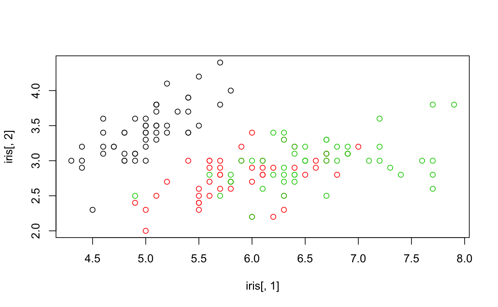
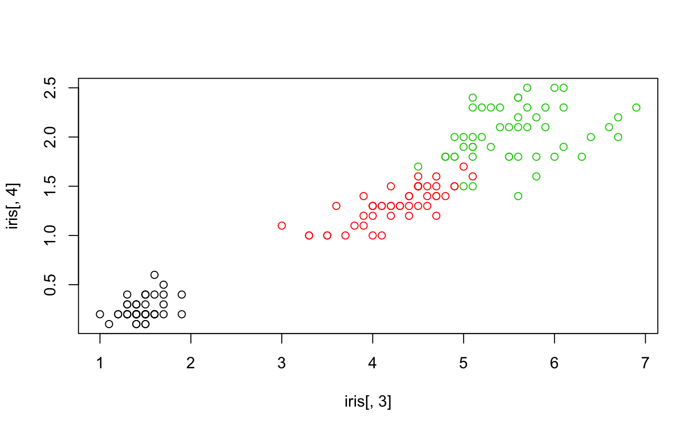

Compute the batch separation metric
batch_separation(emb, batch)
| emb | the embedding of the cells where each row is a cell, and each column is a feature (e.g. principal component) |
|---|---|
| batch | the batch labels of the cells |
Cohen's kappa of the the predicted batch labels with the true batch label on the entire dataset (i.e., training accuracy)
# suppose that iris[["Species"]] are the batch labels batch_separation(emb = iris[,1:2],batch = iris$Species) # lower batch separation present in dim = 1:2#> [1] 0.73batch_separation(emb = iris[,3:4],batch = iris$Species) # higher batch separation in dim = 3:4#> [1] 0.94